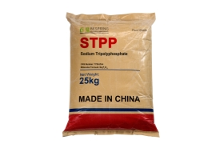
Sodium Tripolyphosphate (STPP)
CAS: 7758-29-4
Food-grade phosphate used for water retention, emulsification, and stabilization in meat processing, seafood, and food manufacturing industries.
Compare phosphate families by chemical identity, grade, function and application. Bespring supports specification matching and product qualification for processors, formulators and distributors.
Browse product categories beyond phosphates, then confirm grade, specification, packaging and documentation with our team.

CAS: 7758-29-4
Food-grade phosphate used for water retention, emulsification, and stabilization in meat processing, seafood, and food manufacturing industries.
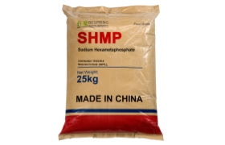
CAS: 10124-56-8
Multifunctional phosphate used in water treatment, detergents, food processing, and industrial anti-scaling and chelating applications.

CAS: 7320-34-5
Food-grade potassium pyrophosphate used as a chelating agent, emulsifier, buffering agent, and water retention additive in meat processing, seafood, dairy products, water treatment, and industrial applications.

CAS: 7785-88-8
Sodium Aluminum Phosphate (SALP) is a food-grade leavening acid used in baking powder systems, bakery formulations, and industrial food processing applications to control gas release and improve product texture.
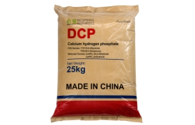
CAS: 7757-93-9 / 7789-77-7
Dicalcium Phosphate (DCP) is widely used as a high-quality calcium and phosphorus source in animal nutrition, feed premix production, and livestock farming. It is an essential mineral additive for poultry, swine, cattle, and aquaculture feed formulations.
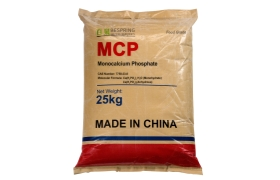
CAS: 7758-23-8
Monocalcium Phosphate (MCP) is a highly bioavailable calcium and phosphorus source widely used in animal nutrition, feed premix production, aquaculture feed, and food fortification applications. It is produced through the reaction of phosphoric acid with calcium compounds, offering excellent solubility and high nutrient absorption efficiency. MCP is especially suitable for poultry, swine, ruminants, and aquatic species, supporting healthy growth and bone development.
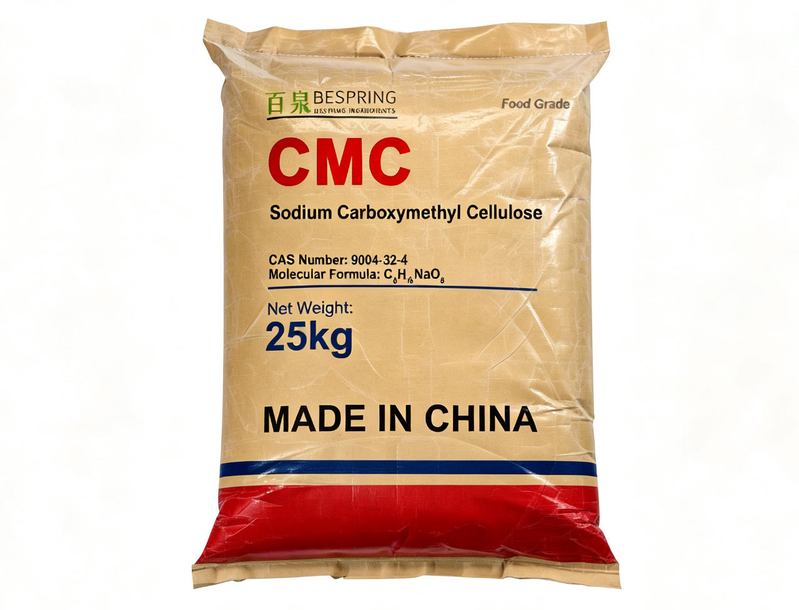
CAS: 9004-32-4
A versatile cellulose derivative widely used as a thickener, stabilizer, binder, and water retention agent in food processing, detergent formulations, mining operations, and various industrial applications.
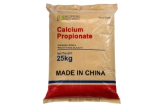
CAS: 4075-81-4
Widely used food preservative for bakery, dairy, beverages, and processed foods to prevent mold growth and extend shelf life.
Start with your production challenge. Explore ingredient functions, typical applications, and recommended products for six industries we serve.
 01
Food Processing
Texture, shelf life, water retention and formulation stability.
Explore Food Ingredient Solutions
02
Animal Nutrition
Bioavailable mineral sources for feed and premix production.
Explore Animal Nutrition Ingredients
01
Food Processing
Texture, shelf life, water retention and formulation stability.
Explore Food Ingredient Solutions
02
Animal Nutrition
Bioavailable mineral sources for feed and premix production.
Explore Animal Nutrition Ingredients
 03
Cleaning & Detergents
Builders, chelants and performance aids for cleaning systems.
Explore Cleaning Ingredients
03
Cleaning & Detergents
Builders, chelants and performance aids for cleaning systems.
Explore Cleaning Ingredients
 04
Water Treatment
Scale control, softening and process-water conditioning.
Explore Water Treatment Chemicals
05
Mining & Minerals
Process chemicals supporting separation and ore treatment.
Explore Mining Process Chemicals
06
Agriculture
Nutrient inputs and raw materials for fertilizer production.
Explore Fertilizer Ingredients
04
Water Treatment
Scale control, softening and process-water conditioning.
Explore Water Treatment Chemicals
05
Mining & Minerals
Process chemicals supporting separation and ore treatment.
Explore Mining Process Chemicals
06
Agriculture
Nutrient inputs and raw materials for fertilizer production.
Explore Fertilizer Ingredients
Explore how Bespring ingredients address practical formulation and process needs across food, feed, water treatment, and industrial manufacturing.
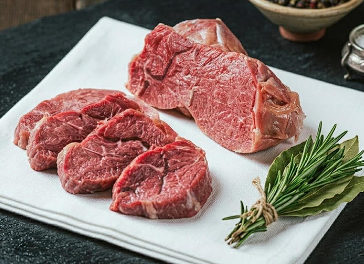
01Sodium Tripolyphosphate · INS 451(i)
A practical phosphate application for moisture management, texture support, emulsion stability, and consistent processing in meat and poultry products.
Read application caseTetrapotassium Pyrophosphate · INS 450(v)
Potassium-based phosphate functionality for permitted seafood formulations requiring buffering, sequestration, and moisture management.
Read application caseCalcium Propionate · E282
A preservative application focused on mold control and shelf-life planning for bread, rolls, and other yeast-raised bakery products.
Read application case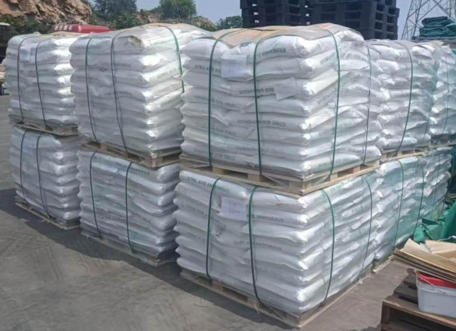
04Monocalcium Phosphate · Feed Grade
A mineral-feed application for delivering available phosphorus and calcium in poultry diets and premix systems.
Read application case
05
Sodium Hexametaphosphate · CAS 10124-56-8
A water-treatment application using sequestration and threshold effects to support scale-control programs in industrial systems.
Read application case
06
Sodium Tripolyphosphate · Technical Grade
A detergent-builder application supporting water softening, soil suspension, and cleaning performance in powdered formulations.
Read application caseSTPP · SHMP · TSPP · TKPP · Blends
A plant-trial framework measured by net yield, thaw loss, cook loss and sensory quality.
Read application caseSAPP · SALP · MCP · DAP · Blends
Match reaction rate, neutralizing value and gas-release timing to mixing, holding and baking.
Read application caseDSP · DKP · MKP · TKP · Phosphoric Acid
A formulation screen for pH control, heat stability, emulsification, sodium targets and shelf life.
Read application case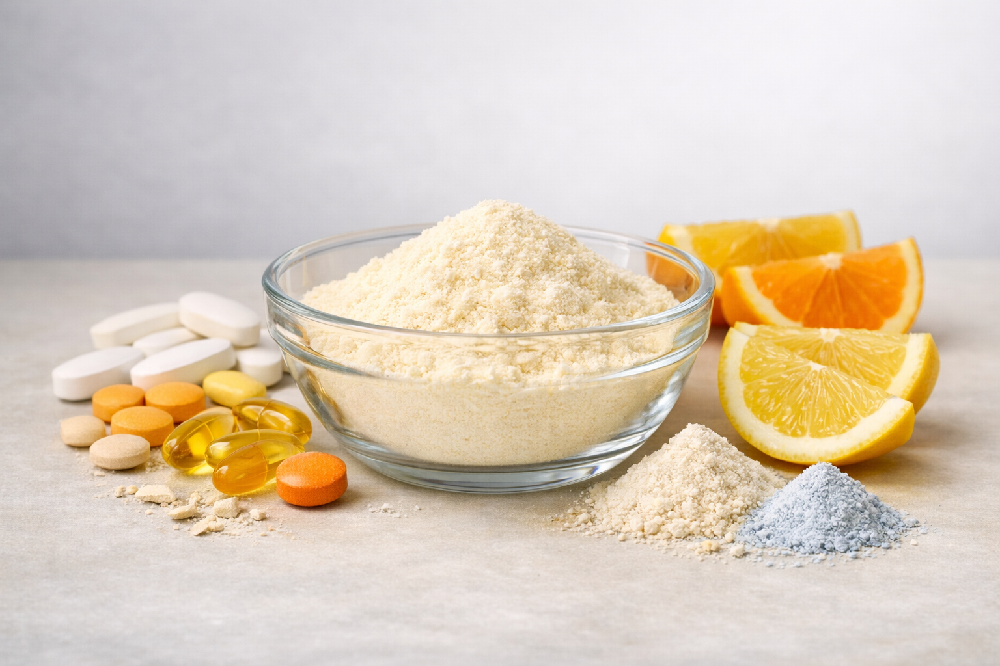
10TCP · DCP · MCP · MKP
Select mineral phosphates by elemental content, purity, particle size, dispersion and performance.
Read application caseA useful quotation is more than a price. Align the product identity, grade, test criteria and shipment requirements before commercial approval.
Compare assay, impurity limits, particle size, pH, physical form and test methods against your target specification.
Request the current specification or TDS, SDS, sample COA and applicable quality or regulatory documents.
Define the intended application and evaluation criteria so the sample represents the grade being qualified.
Confirm pack size, pallet or container requirements, destination port, Incoterm and shipment-document needs.
Bespring Chemical combines selected phosphate manufacturing with a broader chemical ingredient supply network. We support B2B buyers in food processing, animal nutrition, water treatment, cleaning, agriculture and mineral processing with product matching, qualification documents and export coordination.
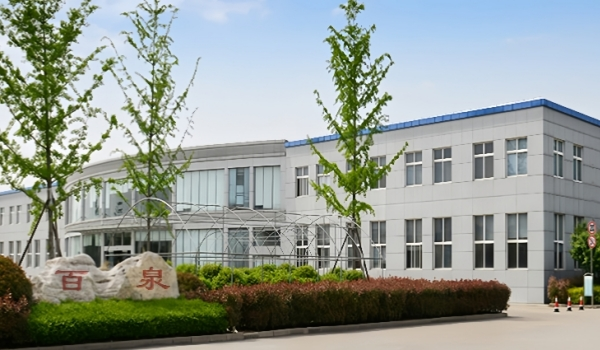
Bespring Chemical operates an integrated chemical production and export system in China, including manufacturing bases, specialized production workshops, independent quality control laboratories, and dedicated warehousing facilities for bulk chemical storage.
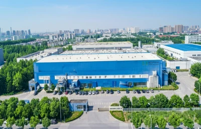

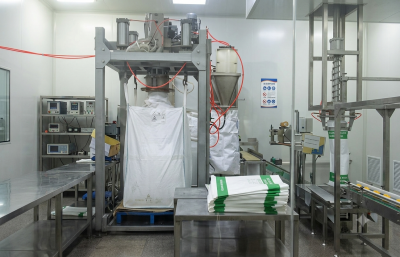
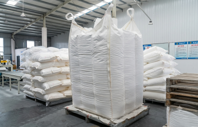
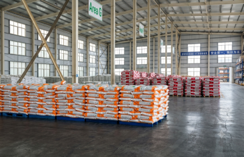

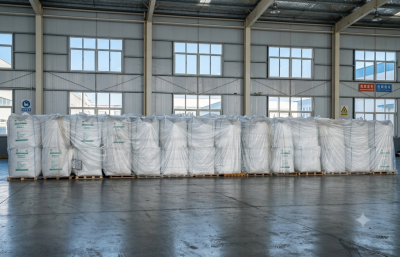
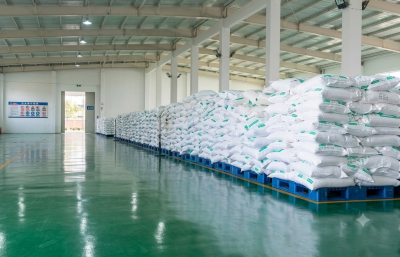

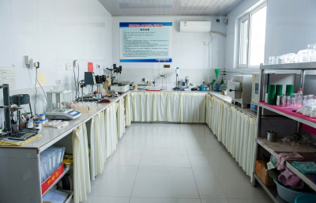
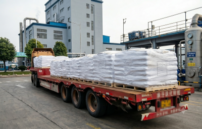
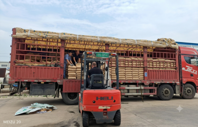
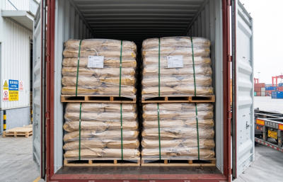

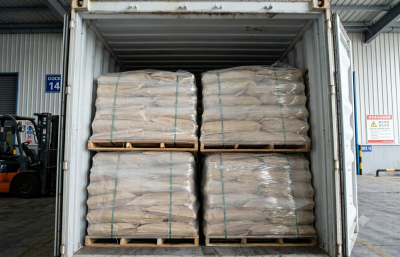
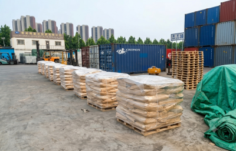
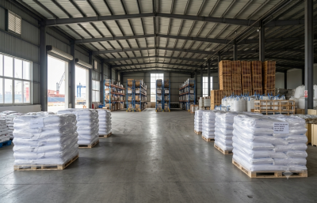
Bespring Chemical exports to more than 60 countries and regions across Europe, Asia, the Middle East, North America, South America, Africa, and Oceania, supporting long-term B2B procurement through quality assurance, technical documentation, regulatory compliance support, and export logistics coordination.
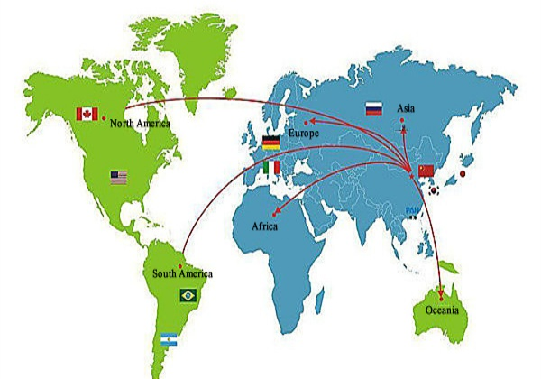
Specification-led sourcing guidance for food, feed and industrial chemical procurement.
Compare STPP and SHMP by chemical identity, function, grade, specification, physical form and supplier-qualification requirements.
Read Full Guide →Compare nutrient identity, assay, physical form, contaminant limits and documents when sourcing MCP or DCP.
Learn More →Align the specification, SDS, COA, certificates, labels and shipping documents before an international chemical order.
Learn More →Understand how grade, specification, impurity limits, manufacturing controls and market suitability change the approval basis.
Learn More →Product suitability depends on the exact grade, specification, application and destination market. These answers define a practical starting point.
Bespring supplies phosphate ingredients, food ingredients, feed additives, water treatment chemicals, mining chemicals, cleaning ingredients and fertilizer raw materials.
Bespring manufactures selected phosphate products and supplies a broader portfolio through its qualified supply network. Manufacturing or supply status, production site and supporting documents should be confirmed for the specific product quoted.
Depending on the product and grade, buyers can request the current specification or TDS, SDS, sample COA, packaging details and applicable quality or regulatory documents.
Yes. Food-grade phosphate options include sodium, potassium and calcium phosphates and functional blends. Suitability is assessed against the requested specification, application, destination-market requirements and supporting documents.
Include the product name, grade or standard, required specification, application, annual or trial quantity, packaging, destination port and any documentation or compliance requirements.